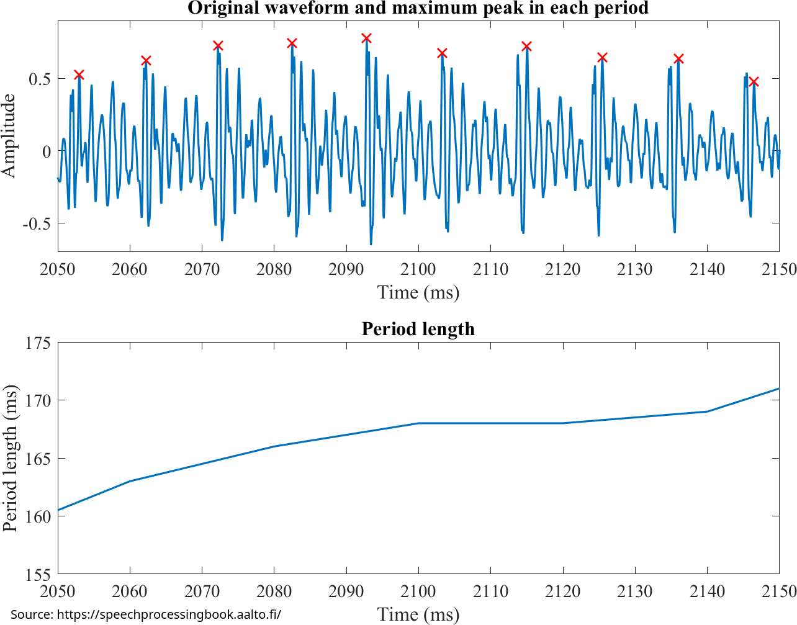

# Resynthesis ### Will Styler - LIGN 168 --- ### First, one quick concept to learn --- ### The Weak form of the Navier-Stokes Equations - Useful for describing fluid movement (as in the vocal tract) - <img class="r-stretch" src="img/weak_navier_stokes.png"> --- ### Lol jk - This is an apology - ... and room for questions from last time --- ### Now back to the actual course material --- ### Now we've got the Source and Filter - Pitch-finding techniques give us the frequency and characteristics of the source - LPC gives us the filter which is applied to the source - Both are matrices of numbers, which are easy to modify - **What can we do with that information?** --- ### Resynthesis - Turning speech into a computational numerical representation, and then back to speech again - We have Speech-to-Text, Text-to-Speech - This is Speech-to-Speech! --- ### Today's Plan - Modifying Pitch and Speed - Modifying Pitch and/or Speed - Source-Filter Resynthesis - The Dumbest and Most Exotic Voice Modification --- ## Modifying Pitch and Speed --- ### It's very easy to modify pitch *and* speed - Play the samples back at a different rate! - Decrease the speed of playing samples to slow the sound down - "Treat a 44,100Hz recording like it was 22,050" - Playing back 44,100 samples will take two seconds, instead of one - Increase the speed of playing samples to speed sound up - "Treat a 44,100Hz recording like it was 88,200" - Playing back 44,100 samples will take 0.5 seconds, instead of one - *This is different from resampling, as we're not adding or removing any points!* --- ### Increasing Playback Speed Base (00:08) <audio controls src="phonmedia/psola/rainbow_base.mp3"></audio> 0.9x (00:07) <audio controls src="phonmedia/psola/rainbow_speed0point9.mp3"></audio> 0.75x (00:06) <audio controls src="phonmedia/psola/rainbow_speed0point75.mp3"></audio> 0.5x (00:04) <audio controls src="phonmedia/psola/rainbow_speed0point5.mp3"></audio> 0.25x (00:02) <audio controls src="phonmedia/psola/rainbow_speed0point25.mp3"></audio> 0.1x (00:00:81) <audio controls src="phonmedia/psola/rainbow_speed0point1.mp3"></audio> --- ### Decreasing Playback Speed Base (00:08) <audio controls src="phonmedia/psola/rainbow_base.mp3"></audio> 1.1x (00:09) <audio controls src="phonmedia/psola/rainbow_speed1point1.mp3"></audio> 1.5x (00:12) <audio controls src="phonmedia/psola/rainbow_speed1point5.mp3"></audio> 2x (00:16) <audio controls src="phonmedia/psola/rainbow_speed2point0.mp3"></audio> 3x (00:24) <audio controls src="phonmedia/psola/rainbow_speed3point0.mp3"></audio> 4x (00:32) <audio controls src="phonmedia/psola/rainbow_speed4point0.mp3"></audio> --- ### When you speed up playback, pitches go up - The period changes when you play cycles back faster, so we perceive a higher pitch - This affects *all* frequencies, not just voiced portions - This is useful for making ents and chipmunks - Also [the best non-cover cover of 'Jolene'](https://www.youtube.com/watch?v=CMrfM711vXI) - *When most people play with pitch or duration, they'd rather be...* --- ## Modifying Pitch *OR* Speed --- ### Can we change duration independent of frequency, and vice versa? - This is a much harder to do! - Luckily, there's an algorithm for that! --- ### Time-Domain Pitch-Synchronous Overlap-Add (TD-PSOLA) - An algorithm which permits you to modify the duration or pitch of a voice, *independently of one another* - First described by [Moulines and Charpentier in 1990](https://www.sciencedirect.com/science/article/abs/pii/016763939090021Z) - There is a whole family of related algorithms for doing this, each with nuances, but we're talking generally about the concept, and simplifying some - This can be used to modify pitch, or duration! - **Again, we're focusing on intuitions over math, and doing some black-boxing** --- ### The PSOLA Process for Changing Pitch - Find the f0 of the signal and identify periods - Segment the sound into 'grains' with a *filter*, so that the edges smooth to zero - Overlap the grains more tightly to increase pitch, or more loosely to reduce pitch - Duplicate or remove grains to keep constant duration - Collapse the overlapped grains down into one signal --- ### Finding Periods  --- ### Filtering, Overlapping <img class="r-stretch" src="phonmedia/psola_process.png"> --- ### Duplicating Cycles --- ### Adding the grains together <img class="r-stretch" src="phonmedia/psola_process.png"> --- ### Thus, we can change f0, without changing the duration - Overlap the grains more tightly to increase pitch - Overlap the grains more loosely to decrease pitch - Add or remove grains to keep duration constant - Then add it all up to the final sound! --- ### Increasing f0 using PSOLA 1x <audio controls src="phonmedia/psola/rainbow_pitchbase.mp3"></audio> 1.2x <audio controls src="phonmedia/psola/rainbow_pitch1point2.mp3"></audio> 2x <audio controls src="phonmedia/psola/rainbow_pitch2point0.mp3"></audio> 3x <audio controls src="phonmedia/psola/rainbow_pitch3point0.mp3"></audio> 4x <audio controls src="phonmedia/psola/rainbow_pitch4point0.mp3"></audio> 5x <audio controls src="phonmedia/psola/rainbow_pitch5point0.mp3"></audio> --- ### Decreasing f0 using PSOLA 1x <audio controls src="phonmedia/psola/rainbow_pitchbase.mp3"></audio> 0.9x <audio controls src="phonmedia/psola/rainbow_pitch0point9.mp3"></audio> 0.75x <audio controls src="phonmedia/psola/rainbow_pitch0point75.mp3"></audio> 0.65x <audio controls src="phonmedia/psola/rainbow_pitch0point65.mp3"></audio> --- ### We can see the process in the resulting waveforms (Unmodified) --- ### We can see the process in the resulting waveforms (f0 x5) <img class="r-stretch" src="phonmedia/psola_quantization.png"> --- ### We can modify *just* duration, too! - Find the f0 of the signal and identify periods - Segment the sound into 'grains' with a *filter*, so that the edges smooth to zero - Keep the grain-spacing the same (thus preserving f0) - Duplicate or remove grains to increase the duration - Collapse the overlapped grains down into one signal --- ### Decreasing Duration using PSOLA Base (00:08) <audio controls src="phonmedia/psola/rainbow_base.mp3"></audio> 0.75x (00:06) <audio controls src="phonmedia/psola/rainbow_point75x.mp3"></audio> 0.5x (00:04) <audio controls src="phonmedia/psola/rainbow_point5x.mp3"></audio> 0.25x (00:02) <audio controls src="phonmedia/psola/rainbow_point25x.mp3"></audio> 0.1x (00:00:81) <audio controls src="phonmedia/psola/rainbow_point1x.mp3"></audio> --- ### Increasing Duration using PSOLA Base (00:08) <audio controls src="phonmedia/psola/rainbow_base.mp3"></audio> 1.1x (00:09) <audio controls src="phonmedia/psola/rainbow_1point1x.mp3"></audio> 1.5x (00:12) <audio controls src="phonmedia/psola/rainbow_1point5x.mp3"></audio> 2x (00:16) <audio controls src="phonmedia/psola/rainbow_2point0x.mp3"></audio> 3x (00:24) <audio controls src="phonmedia/psola/rainbow_3point0x.mp3"></audio> 4x (00:32) <audio controls src="phonmedia/psola/rainbow_4point0x.mp3"></audio> 15x (2:00) <audio controls src="phonmedia/psola/rainbow_15point0x.mp3"></audio> --- ### This preserves interpretability! 4x PSOLA (00:32) <audio controls src="phonmedia/psola/rainbow_4point0x.mp3"></audio> 4x Playback (00:32) <audio controls src="phonmedia/psola/rainbow_speed4point0.mp3"></audio> 0.5x PSOLA (00:04) <audio controls src="phonmedia/psola/rainbow_point5x.mp3"></audio> 0.5x Playback (00:04) <audio controls src="phonmedia/psola/rainbow_speed0point5.mp3"></audio> --- ### You can manipulate Duration and Pitch at once "Make this sentence 1.5x slower, while raising the pitch 1.5x" Base Pitch and Duration <audio controls src="phonmedia/psola/rainbow_base.mp3"></audio> 1.5x Pitch and Duration <audio controls src="phonmedia/psola/rainbow_both1point5.mp3"></audio> --- ### There is a *lot* of complexity to do PSOLA right - You need a good, reliable pitch track - Creak or aperiodicity make this hard - All the problems from last time apply - PSOLA for non-periodic sounds is tough - You can grab repeated-feeling grains of a fricative and do your best - You need to filter precisely so that they add smoothly - You need to make sure the added segments are *in the correct phase* --- ### There is a *lot* of complexity to do PSOLA right (continued) - You need to make sure that *individual harmonics still align* - You need to choose which grains to add or delete - You need even fancier approaches where there's more than one f0 (e.g. two voices or instruments) --- ### PSOLA is not perfect - There will be artifacting, increasing with the amount of change - It will miss cycles and leave some bits sounding 'wrong' - There are limits as to the amount of (good-sounding) possible change - **But on the whole, it works pretty damned well!** - ... and it's used all the time under a different name --- ### Autotune - An algorithm developed by Andy Hildebrand and marketed in 1997 - Currently sold by Antares Audio Technology - Uses an approach similar to PSOLA to resynthesize voices - Automatically 'corrects' pitch to hit a certain target - Can be used to 'fix' [imprecise vocals](https://en.wikipedia.org/wiki/Paris_(Paris_Hilton_album)) - Can also be used to artistic ends (e.g. [T-Pain](https://www.youtube.com/watch?v=Lt2wjJlP2N4) or Cher's [Believe](https://www.youtube.com/watch?v=nZXRV4MezEw)) - Can also be used to [Autotune the News](https://www.youtube.com/watch?v=3eooXNd0heM) --- ### Cher's 'Believe' - Released in 1998 (one year after Autotune) - Autotune was briefly known as 'the Cher Effect' - <audio controls src="video/cher_believe.mp3"></audio> --- ### Cool! We can change the source! - ... but what about the filter? --- ## Source-Filter Resynthesis --- ### PSOLA modifies the signal as a whole - "We're going to change f0 or duration, but try not to muck up the rest of the spectral information" - Harmonic matching and careful blending mean it's usually pretty successful - *But PSOLA doesn't make any effort to disentangle the source and filter!* - *... and it sure can't change the filter independently of the source* --- ### Can we resynthesize in a way that preserves that independence? - **Yes, with 'Source Filter Resynthesis'** - Also called 'LPC Resynthesis' in the literature - It is very simple, conceptually - Model the Source and Filter, Modify either, and then Recombine them - It uses only concepts you already understand! --- ### Modeling the Source and Filter - Numerically model the source - What's the pitch like? - Where is there voicing? - **This is voicing and pitch detection!** - Numerically model the filter - What's the rest of the spectral envelope like? - How does it change over time? - **This is LPC analysis!** --- ### Now you have models for the source and filter - You can modify the source independently - "Let's increase f0 by 20%!" - Then you can synthesize a source - Voiceless bits can be modeled as white noise - You can also modify the filter independently - "Let's move the first formant up by 100Hz" - This gives you a new filter - Then you apply the filter directly to the source - This is basic math! - **Now you have a sound signal reflecting the modification!** --- ### LPC Resynthesis can be used to modify the pitch! **DO NOT USE LPC RESYNTHESIS TO MODIFY PITCH** Unmodified <audio controls src="phonmedia/psola/rainbow_base.mp3"></audio> 1x f0 LPC <audio controls src="phonmedia/psola/rainbow_lpcpitch1point0.mp3"></audio> 1.5x f0 PSOLA <audio controls src="phonmedia/psola/rainbow_pitch1point5.mp3"></audio> 1.5x f0 LPC <audio controls src="phonmedia/psola/rainbow_lpcpitch1point5.mp3"></audio> 0.65x f0 PSOLA <audio controls src="phonmedia/psola/rainbow_pitch0point65.mp3"></audio> 0.65x f0 LPC <audio controls src="phonmedia/psola/rainbow_lpcpitch0point65.mp3"></audio> --- ### LPC Resynthesis can change the nature of the filter! - This is how phoneticians modify formants when creating stimuli! - Separate the source from the filter via Inverse Filtering - Modify the LPC, and then recombine! - You can change formant frequency, or bandwidth! - My Praat Handbook explains the process in 8.15 --- ### Here's a nice continuum Date <audio controls src="phonmedia/date1.mp3"></audio> Debt <audio controls src="phonmedia/date12.mp3"></audio> 11 Steps <audio controls src="phonmedia/date_debt_11_steps.mp3"></audio> --- ### Date-Debt Continuum <img class="r-stretch" src="phonmedia/datedebtspectrogram.png"> --- ### This is amazing! - It's the very best way to change the quality of vowels and otherwise - It allows you to test hypotheses about filter shapes - It gives you incredible freedom to modify voices - There's just one problem... --- ### Source Filter Resynthesis Sucks - When you have a problem, and you decide to use LPC resynthesis, you have two problems - It's common not to be able to 'make the change' - If you don't do the inverse-filter properly, some of the filter sticks around - Noise and artifacts are everywhere - You need to resample to do it properly - You can modify part of the sound (e.g. the bottom 3500 Hz) and recombine with the rest - You need to double check every stimulus to make sure it's doing what you think it is - **Come talk to me if you ever start down this dark road** --- ### LPC Resynthesis shows every error in the chain! - All the error in pitch estimation - All the error in LPC estimation - Any error in the math or changes to the relevant formants - This requires the errors to be modeled to sound clean! - We can't do this for modifying the sounds - LPC Resynthesis for voice compression models the error explicitly --- ### LPC Resynthesis struggles to sound 'normal' and 'human' - You'll often get 'robotic' voices who don't sound like the person they were - Bad modeling can create clicks and whistles - It sounds a lot like a bad cell phone call from the early 2000s - We'll talk more about why soon! - ... but it's great at making somebody sound non-human! - There it's called... --- ### Musical Vocoding - You don't have to use a human source with the extracted filter - You can use any sound you'd like as the 'source' - Including a synthesizer! --- ### Daft Punk <img class="r-stretch" src="people/daft_punk.jpg"> --- ### Daft Punk led the way in Vocoder Use Harder, Better, Faster, Stronger (from 'Discovery') <audio controls src="video/harderbetterfasterstronger.mp3"></audio> Doin' it Right (from 'Random Access Memories') <audio controls src="video/doin_it_right.mp3"></audio> --- ### Vocoders are common and awesome - They're different from 'talk boxes' - Those use a tube to direct an instrument's output into a person's physical mouth - They're often based on LPC synthesis! - ... and they're the place where LPC synthesis is most fun! --- ## The Dumbest and Most Exotic Voice Modification --- ### Jocelyn Pook's 'Masked Ball' - Written for a pivotal scene in Stanley Kubrick's 'Eyes Wide Shut' (1999) - This movie is VERY Not-Safe-For-Work, and very good - <audio controls src="video/pook_maskedball_forwards.mp3"></audio> - <audio controls src="video/pook_maskedball_reversed.mp3"></audio> - Actually just a Romanian Orthodox Priest singing, but reversed - Zisa Domnului catre ucenicii sai...Porunca noua dau voua - And God told to his apprentices...I gave you a command. --- ### Reversal! - You can get neat effects by just reversing audio - Lots of musicians play with this - Jocelyn Pook is great at this, see also 'Yellow Fever Psalm' - Also called 'Backmasking' when you hide reversed messages - [Mick Gordon, the Composer of DOOM (2016) is a gigantic troll](https://www.youtube.com/watch?v=U4FNBMZsqrY) - The relevant part starts around 40 minutes in, but the whole thing is worth watching --- ### Wrapping up - Modifying pitch *and* duration is really easy - PSOLA is really valuable for modifying pitch *and/or* duration - PSOLA is really complicated - Source-Filter Resynthesis allows you to modify just the filter of a word - Source-Filter Resynthesis sucks for everybody but Daft Punk - !stceffe taen yllaer sevig hceeps gnisreveR --- ### Next time - How can we modify speech signals to clean them up? --- <huge>Thank you!</huge>